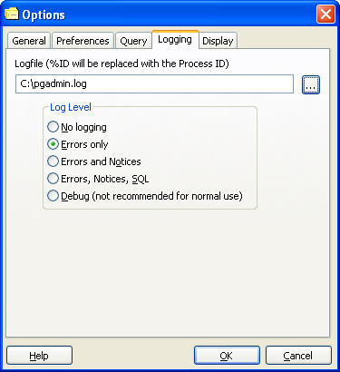

Options de pgAdmin - Onglet 6 (Traces)

- Traces - Cette option indique le fichier de stockage des traces
de pgAdmin. Si %ID se trouve dans le nom, il sera remplacé par l'identifiant
du processus, permettant l'exécution simultanée de plusieurs versions de
pgAdmin.
- Sans trace - Aucune trace n'est enregistrée.
- Erreurs seules - pgAdmin enregistrera seulement les erreurs
dans les traces, mais rien d'autre.
- Erreurs et avertissements - pgAdmin tracera les erreurs et
les messages d'avertissement de PostgreSQL dans les traces, mais rien
d'autres.
- Erreurs, avertissements, SQL - Les messages d'erreurs,
d'avertissements de PostgreSQL et les requêtes SQL seront enregistrés dans
les traces.
- Débogage - Les messages d'erreurs, d'avertissements de PostgreSQL,
les requêtes SQL et les messages de débogage seront enregistrés dans les
traces. Cette option peut ralentir significativement pgAdmin et n'est donc
pas recommendée pour une utilisation normale.